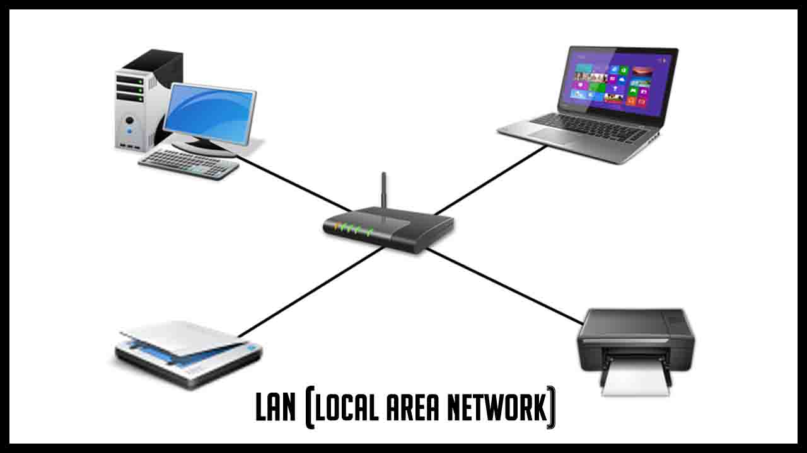

RC
Autor:Isaac Briceño

Definicion:
Son equipos y software que están conectados por dispositivos que reciben y envían información por transmisión guiada, transmisión inalámbrica, hasta satélites de comunicación. El objetivo siempre es compartir información y ofrecer servicios.
Necesidades de una Red
Una red se hace necesaria porque nos ahorra tiempo y dinero a todos y nos beneficia en:
Elementos de una red
La red de computadoras se encuentra conectadas no solo por hardware, sino también por software, en el hardware incluimos importante las tarjetas de red y los cables que logran la unión.